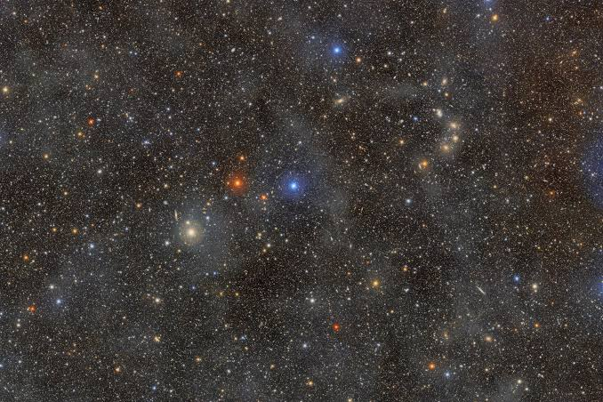

El universo es la totalidad de todo lo celestes, como galaxias, estrellas, planetas, satélites, cometas, asteroides y otros objetos cósmicos, así como las formas de energía y las partículas fundamentales que los componen.
Según la teoría científica más aceptada, el universo se originó hace aproximadamente 13.8 mil millones de años a partir del Big Bang, un evento que marcó el inicio de la expansión del espacio. Desde entonces, el universo ha continuado expandiéndose y evolucionando, dando lugar a la formación de galaxias, sistemas estelares y planetas.

Por primera vez en más de 50 años desde la era de las misiones Apolo, un grupo de astronautas orbitó la Luna y pudo observar regiones del satélite que ningún ojo humano había presenciado jamás.Durante el cuarto día de vuelo a bordo de la nave Orion, los astronautas presenciaron de manera directa la Cuenca Orientale, un descomunal cráter de impacto de 930 kilómetros de ancho con múltiples anillos internos. Aunque los robots y satélites ya le habían tomado fotos, observar su relieve real, su profundidad y sus sutiles variaciones de color en tres dimensiones fue una experiencia totalmente nueva para nuestra especie.A continuacion veras algunos datos curiosos del universo.